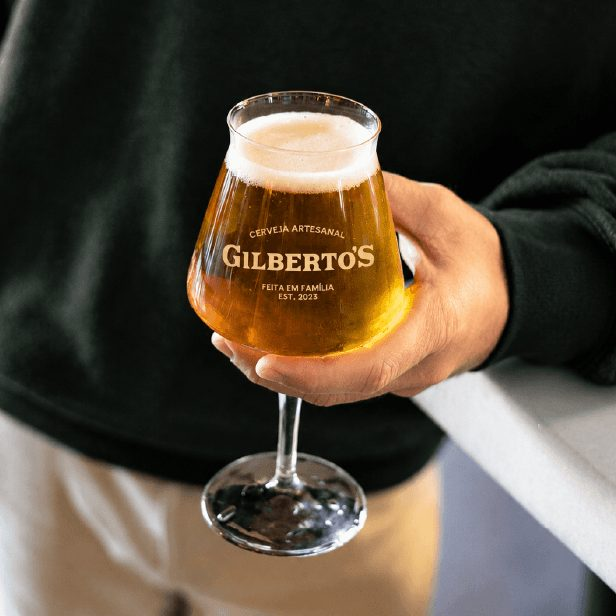
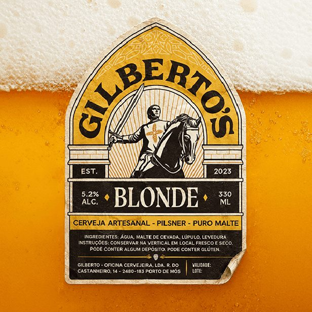
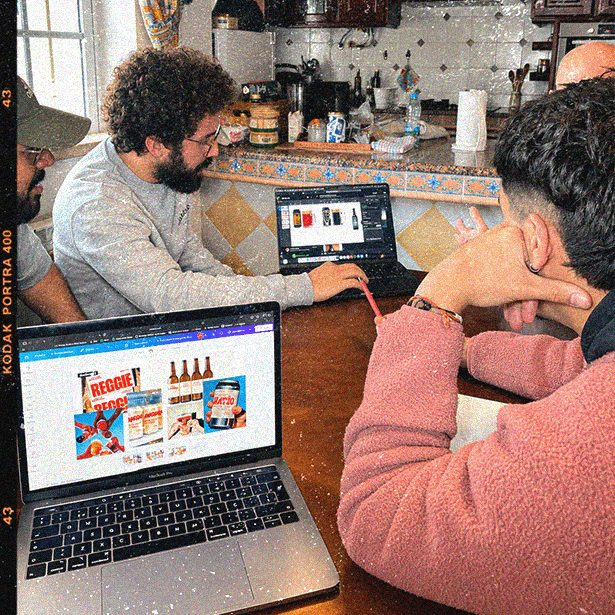
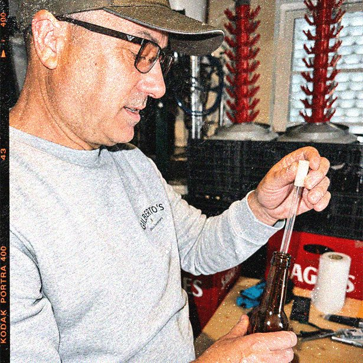
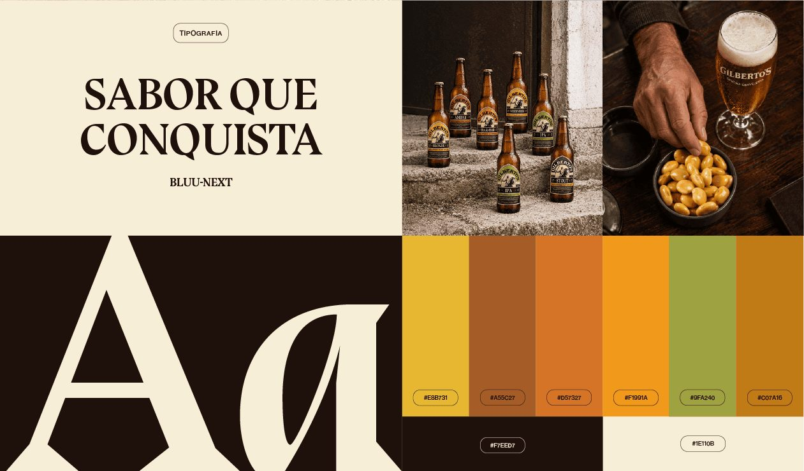

Cerveja Gilberto's

Descrição do projeto
A Gilberto's é uma cervejaria artesanal familiar de Porto de Mós, fundada em 2023, que produz lotes exclusivos inspirados na tradição cervejeira checa. Desenvolvemos a identidade visual de raiz — símbolo, paleta de cores e tipografia — e reunimos as regras num manual de normas gráficas.
O desafio
O mercado da cerveja artesanal está cheio de marcas parecidas. A identidade tinha de se destacar, transmitir a origem familiar e o cuidado de cada lote, e ligar a marca à história e ao território de Porto de Mós, sem perder o carácter de produto feito à mão.
Resultados & impacto
Uma identidade forte e memorável. O símbolo inspira-se em D. Nuno e na Batalha de Aljubarrota; a paleta de castanhos, beges e âmbar evoca a cevada e a cerveja. As várias versões do logótipo mantêm rótulos, embalagens, redes sociais e materiais promocionais coerentes, e o manual de normas dá à marca uma base para crescer.
Conclusão
A história de um lugar pode dar força a uma marca. Aqui, tradição, território e ofício juntaram-se numa identidade que honra as raízes e atrai novos apreciadores de cerveja artesanal.




